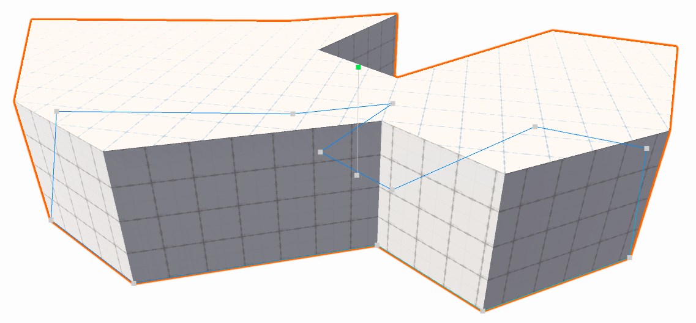
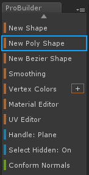
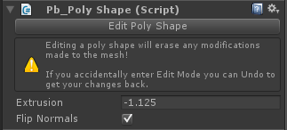

Poly Shape
Poly Shape
Section Video: Creating and Editing a Poly Shape

Poly Shape is unlike the usual ProBuilder shapes in that it is interactive and editable indefinitely. Once a Poly Shape has been created you may continue to edit it's control points and other settings.
Important!
Modifying control points or settings will clear any mesh edits.
Modifying control points or settings will clear any mesh edits.
Quick Start

- In the ProBuilder Toolbar select New Poly Shape.
- In the Scene View click to add control points. These will form the outer bounds of your mesh.
- Once finished placing points, hit
Enter / ReturnorSpaceto finalize the shape. - Move the mouse up and down to set the mesh height, then
Left Clickto finalize.
After the initial path and height setting, the mesh enters Editing Mode.
Editing a Poly Shape
Even after the initial creation steps a Poly Shape can still be modified.
Select the Edit Poly Shape button in the Unity Inspector. To disable Poly Shape Editing simply click this button again.

- Move existing control points by clicking and dragging.
- Add new points by clicking along the perimeter line.
- Remove existing points by clicking to select, then press
Backspace(Deleteon Mac). - Set the height by clicking and dragging the handle in the center of the mesh.
- Flip the normals by selecting Flip Normals in the Inspector.